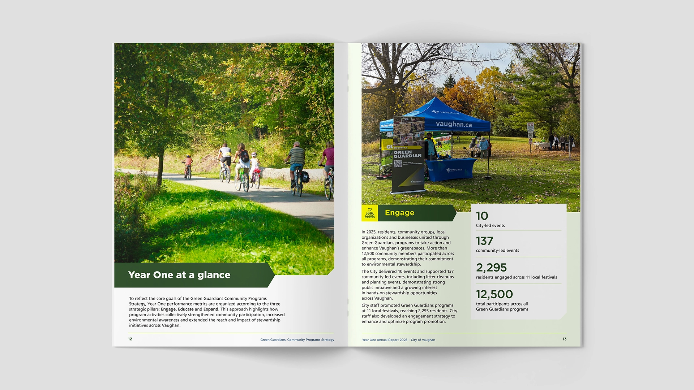
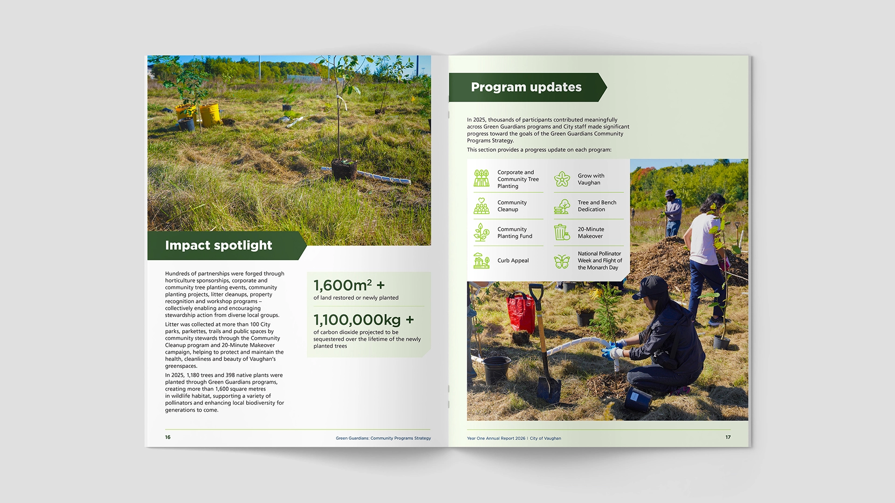

The City needed its first annual report for the new Green Guardians strategy. Most documents like this were dense, overly long, and easy to ignore. The goal was to make the report feel worth opening — and worth keeping.
We set out to give the Green Guardians program a clear visual presence of its own — while remaining fully cohesive with the City of Vaughan’s wider brand guidelines. Rather than treating the annual report as a one-off document, we approached it as the foundation of a reusable visual language for the program.

The system balances recognition and distinctiveness. It draws from the City’s existing colour and typography principles, then extends them with a tighter green-and-yellow palette, angled headers, and large impact figures. Consistent spacing and white data panels on light green stock make the metrics stand out. The same system was designed to move directly into presentation decks, creating one connected set of materials across the program.

The report established a clear visual language for Green Guardians that sits comfortably within the City of Vaughan’s brand while giving the program its own presence. It raised the standard for future reports and presentations, providing a system the team can continue to build on.